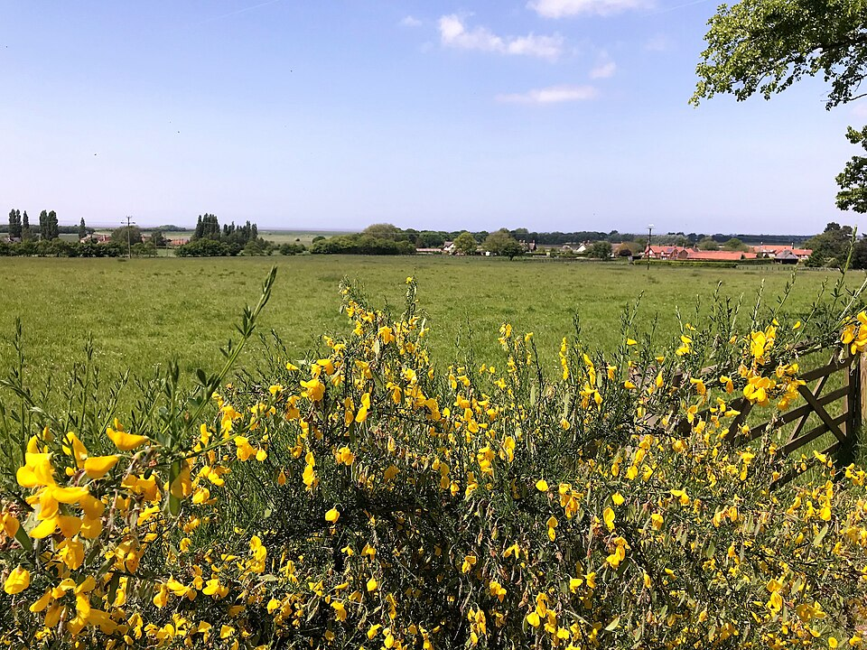

Agro Forte, Futuro Sustentável
O agronegócio é vital para o Brasil. Crescer na produção agrícola deve caminhar lado a lado com a preservação dos recursos naturais, garantindo sustentabilidade para as futuras gerações.

Tecnologia a Favor da Natureza
Drones, sensores, sistemas de irrigação inteligente e monitoramento por satélite ajudam a produzir mais usando menos recursos, tornando a agricultura moderna eficiente e sustentável.

Equilíbrio entre Produção e Meio Ambiente
Preservar nascentes, cuidar do solo, proteger a biodiversidade e usar água de forma consciente são práticas essenciais para uma agricultura sustentável.

Campo e Cidade: Uma Conexão Essencial
A produção agrícola abastece cidades e fortalece a economia. Valorizar o trabalho do produtor é reconhecer essa conexão fundamental para um futuro sustentável.

Responsáveis pelo Projeto

Professor Responsável
Desenvolvimento do projeto sobre sustentabilidade, agro e preservação ambiental.

Estudante Participante
Pesquisa, produção de conteúdo e construção do site.